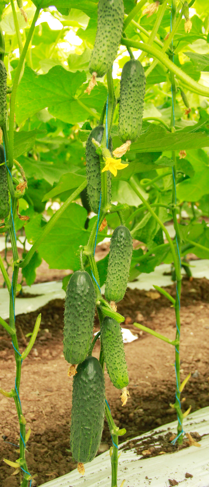
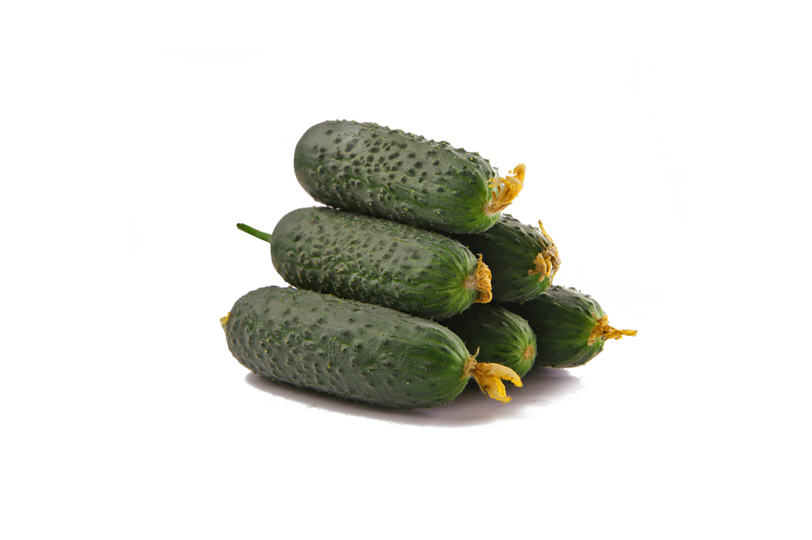

LS 21-13 F1




- Скоростиглий партенокарпічний гібрид огірка,
з високою віддачею раннього врожаю.
- Рослина ,генеративна, з потужною силою росту,
відкрита, жіночого типу цвітіння.
- Формує додаткові пазушні пагони,
що гарантує тривалий збір врожаю.
- Плоди однорідні, щільні, зеленого кольору,
довжиною 10-12см, діаметром 3 – 3.5 см , без гіркоти.
- Стійкий до основних хвороб огірка.
- Придатний для реалізації у
свіжому вигляді та переробки.
- Для вирощування у плівкових теплицях,
відкритому грунті.